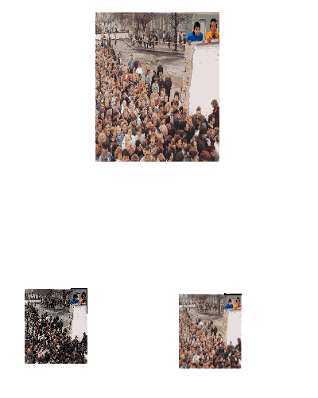

With System 7.0 comes a major revision of QuickDraw. The CopyBits procedure,
QuickDraw's image-processing workhorse, has had some bugs fixed and some features
added. This article gives a brief overview of changes to QuickDraw and then brings you
up to speed on changes to CopyBits.
We're seeing some impressive examples of computer image processing at the movies
these days. Special effects in movies such as Star Trek III , Willow , Back to the
Future , Arachnophobia , Ghost , andThe Abyss were either assisted or completely
generated by computer. While QuickDraw TM does not have the built-in ability to
perform the highly specialized image processing necessary to produce the types of
effects seen in those movies, producing such effects is not beyond the capability of the
Macintosh. You can write custom routines to perform such operations as rotation,
warping, and advanced filtering.
Before you get to that advanced stuff, though, you need to be familiar with QuickDraw's
basic image-processing capabilities, which provide the starting point for an effects
toolbox. With QuickDraw's CopyBits procedure, you can perform several standard
image-processing operations, such as resizing (by stretching, shrinking, or clipping
the image), colorizing, or changing the pixel depth.
CopyBits is better than ever in System 7.0. Improvements to transfer operations and
colorizing mean enhanced results. And it's now easier to use a search procedure to
alter colors. We'll look at these improvements in detail and will see samples of
CopyBits in action after a brief overview of how QuickDraw has evolved.
There have been a number of QuickDraw versions since the introduction of the
Macintosh in 1984. Table 1 summarizes the major QuickDraw versions. Many minor
revisions and bug fixes have also occurred along the way, of course.
Table 1 A Summary of Major QuickDraw Versions
| Date | Version | Where Documented |
| January 1984 | Original B&W QuickDraw | Inside Macintosh |
| (Macintosh 128K) | Volume I | |
| January 1986 | B&W QuickDraw | Inside Macintosh |
| (Macintosh Plus) | Volume IV | |
| March 1987 | Color QuickDraw | Inside Macintosh |
| B&W QuickDraw | Volume V | |
| (Macintosh II) | ||
| May 1989 | 32-Bit QuickDraw v. 1.0 | Inside Macintosh |
| Volume VI | ||
| September 1989 | 32-Bit QuickDraw v. 1.1 | Inside Macintosh |
| (System 6.0.4, | Macintosh Volume VI | |
| IIci, IIfx, IIsi, and LC) | ||
| March 1990 | 32-Bit QuickDraw v. 1.2 | Inside Macintosh |
| (System 6.0.5) | Volume VI | |
| April 1991 | Color QuickDraw | Inside Macintosh |
| B&W QuickDraw | QuickDraw Volume VI | |
| (System 7.0) |
Note: QuickDraw is revised for system releases and, in the past, major revisions have
coincided with hardware releases. In the future, it's likely that major system releases
will be independent of hardware releases.
The version of black-and-white QuickDraw that accompanied the Macintosh Plus
system added the SeedFill, CalcMask, and CopyMask calls. The Macintosh II revision
introduced Color QuickDraw (which supported indexed devices only) and revised the
existing black-and-white QuickDraw (which is still used on 68000-based machines)
to display pictures (data of type 'PICT') created in the color version.
Version 1.0 of 32-Bit QuickDraw, released as an INIT at the Developers Conference in
1989, added direct-color capability to QuickDraw. No black-and-white QuickDraw
update was provided. Version 1.1 of 32-Bit QuickDraw is in ROM on the Macintosh
IIci, IIfx, IIsi, and LC. Version 1.2 of 32-Bit QuickDraw, released as an INIT with
System 6.0.5 and patched by the system on machines that have version 1.1 in ROM,
added the OpenCPicture call and the capability of recording font names into pictures.
The System 7.0 version of Color QuickDraw integrates the functionality of 32-Bit
QuickDraw into all Color QuickDraw machines and adds a variety of new features and
bug fixes. In addition, System 7.0 has a new version of black-and-white QuickDraw
that includes some of Color QuickDraw's functionality. (See "QuickDraw Features New
in System 7.0" on the next page for more information.)
The CopyBits procedure, along with the CopyMask and CopyDeepMask calls, is the core
of QuickDraw's image-processing capability. CopyBits transfers a bit image from one
bitmap to another and clips the result to a specified area. With CopyBits you can
perform such image- processing operations as resizing (by stretching, shrinking, or
clipping the image), colorizing, and changing the pixel depth. You can use it to display
on-screen the contents of an off-screen buffer.
In the System 7.0 version of QuickDraw, as in previous versions, the CopyBits
procedure is defined as
PROCEDURE CopyBits (srcBits,dstBits: BitMap;srcRect,dstRect: Rect;
mode: INTEGER; maskRgn: RgnHandle);
In the original black-and-white QuickDraw, CopyBits used six explicit parameters
(srcBits, dstBits,srcRect, dstRect, mode, and maskRgn) and one global variable
(thePort). The introduction of Color QuickDraw required an additional global variable,
theGDevice, which is used to determine color information for the destination.
Although the number of variables used by CopyBits hasn't changed from earlier
QuickDraw versions, several things have changed:
In the following sections we'll take a closer look at each of these improvements. We'll
then watch CopyBits in action as we stretch and colorize a gray ramp, and perform
RGB and CMY color separations.
The appearance of the result of the CopyBits procedure is determined by the mode
parameter. This parameter specifies which source transfer mode is to be used and
whether or not dithering should occur during transfer operations. Improvements to
CopyBits in System 7.0 make the results of transfer operations independent of
whether the destination device uses indexed or direct color. The new CopyBits also
improves the results of color inversions and extends the use of dithering.
RESULTS INDEPENDENT OF DESTINATION DEVICE
Before System 7.0, the transfer mode specified in CopyBits' mode parameter was
implemented directly by one of eight transfer operations: Copy, Or, Xor, Bic, notCopy,
notOr, notXor, and notBic. For each bit in the source bitmap to be drawn, QuickDraw
found the corresponding bit in the destination bitmap, performed the transfer
operation on the pair of bits, and stored the resulting bit into the bit image.
This method extended naturally to the use of indexed devices in Color QuickDraw. But
with the introduction of 32-Bit QuickDraw, which supported both indexed and
direct-color devices, the results of the Or, Bic, and Xor transfer operations became
dependent on the type of destination device. Using the Or operation with direct
color--where 0 represents black and $FF represents white--resulted in pixels that
went toward white, while using the Or operation on indexed pixels-- where indexes
typically range from 0 (white) to $FF (black)--had a result that went toward black.
Bic and Xor had similar problems.
For example, many applications use the srcXor transfer mode--defined in Inside
Macintosh Volume I as inverting destination pixels that are black in the
source--when dragging a selection. In the original Color QuickDraw, this operation
was performed correctly. In 32-Bit QuickDraw, on the other hand, destination pixels
that were white in the source were inverted on direct-color devices.
In the new Color QuickDraw, the transfer modes srcOr, srcBic, and srcXor are still
undefined for color pixel values, but behave correctly--that is, as documented in
Inside Macintosh Volume I--with respect to black and white regardless of whether the
destination device uses indexed or direct color. The way these modes work now as
compared to the way they worked in 32-Bit QuickDraw version 1.0 for direct sources
copied to a direct-color device is shown in Figure 1.
Figure 1 Results of Transfer Modes for Direct Source to Direct Destination
For all devices now, the srcOr transfer mode produces a black result where the source
is black. The srcXor transfer mode inverts destination pixels where the source is
black. And srcBic (which stands for "bit clear" but may be easier to remember as
"black is changed") produces a white result where the source is black. All three modes
leave the destination pixels under the white part of the source unchanged. (Note that
using these transfer modes for colored sources, while legal, does not always produce
well-defined results.)
INVERSIONS IN COLOR SPACE
Before System 7.0, notCopy was performed by inverting source index values. In
System 7.0, the inversion takes place in color space, giving a much more pleasing
result. Note that the trade-off for higher quality in this case is reduced speed: this
operation is somewhat slower than in previous versions.
Using notSrcCopy mode to highlight items when they've been selected produces good
results on screens of all depths, although it suffers from gray mapping to gray.
Figure 2 shows a button ("Squishy") highlighted using notSrcCopy mode.
Figure 2 Button Highlighted Using notSrcCopy Mode
32-Bit QuickDraw version 1.0 introduced the dither flag. In that version of
QuickDraw, setting the dither flag (bit 6 of the mode, called ditherCopy) caused
dithering to occur when direct pixMaps were copied to indexed destinations.
In System 7.0, setting the dither flag in QuickDraw causes dithering to occur during
any depth conversion or color mapping. For example, you can get a dither when
converting an 8-bit image to a 4-bit image or a 1-bit image, or when copying between
two 4-bit pixMaps that have different color tables. Figure 3 shows the effect of
dithering when depth conversion occurs.
Figure 3 Depth Conversion With and Without Dithering
In addition, setting the dither flag now affects how images are resized. In 32-Bit
QuickDraw, only 32-bit pixMaps used a technique of pixel averaging in RGB space
when they were shrunk. All other pixMaps were shrunk using a technique that
maximizes pixel value and tends to turn shrunk pixMaps to black. In System 7.0,
setting the dither flag causes pixMaps of all depths to be averaged when shrunk. Figure
4 shows the effect of dithering when shrinking a 1-bit image and an 8-bit image.
Notice that the dithered result for the 1-bit image includes shades of gray as well as
black and white.
Because dithering is a relatively slow process, setting the dither flag tells CopyBits
that quality is more important than speed. Note, however, that direct pixMaps are
always averaged when shrunk, regardless of the state of the dither flag.
When CopyBits transfers an image from one bitmap to another, it refers to the
foreground and background color fields of the global variable thePort. The foreground
color specified there is applied to black pixels in the source and the background color
is applied to white pixels. This is known as colorizing .
Before System 7.0, colorizing with CopyBits was performed on the indexes of the
colors rather than on the color values. This meant that the results depended on the
organization of the color look-up table (CLUT) of the destination GDevice. Thus, the
results for multicolor images were unpredictable. This problem is illustrated in
Figure 5. This was the basis for the common knowledge that the foreground and
background color in the current grafPort must be set to black and white respectively
or unpredictable results would occur when using CopyBits. In System 7.0, colorizing
occurs in color space, not index space. Thus, colorizing now works as predictably for
deep source pixMaps as it always has for 1-bit source pixMaps.

Figure 4 Resizing With and Without Dithering
Figure 5 Colorizing
Colorizing is logically the last step in the CopyBits procedure. It modifies the
destination pixel color as follows: all bits that are off in the source pixel are given the
value of the corresponding bit in the foreground color, and all bits that are on are
given the value of the corresponding bit in the background color. This is illustrated for
a 16-bit pixel in Figure 6. For a foreground color of black 6 (all components 0) and a
background color of white (all components $FFFF) this operation does not change the
pixel color value. The formula that performs this operation (in color space) is
result = (src AND bkColor) OR ((not src) AND fgColor)
f15 | f14 | f13 | f12 | f11 | f10 | f9 | f8 | f7 | f6 | f5 | f4 | f3 | f2 | f1 | f0 | fgColor |
b15 | b14 | b13 | b12 | b11 | b10 | b9 | b8 | b7 | b6 | b5 | b4 | b3 | b2 | b1 | b0 | bkColor |
1 | 0 | 1 | 0 | 1 | 1 | 1 | 1 | 0 | 0 | 0 | 0 | 1 | 1 | 0 | 0 | source |
b15 | f14 | b13 | f12 | b11 | b10 | b9 | b8 | f7 | f6 | f5 | f4 | b3 | b2 | f1 | f0 | result |
Figure 6 How Colorizing Works in System 7.0
This operation may seem convoluted at first, but it turns out to be quite useful. For
example, you can invert an image by changing the foreground color to white and the
background color to black. Figure 7 shows some of the variations on one image that can
be obtained simply by changing the foreground and background colors. The code
samples later in this article use CopyBits colorizing to perform CMY and RGB color
separation.
Figure 7 Colorized Versions of the 32-Bit QuickDraw Icon
In Color QuickDraw, destination color information comes from the current GDevice.
You can attach a search procedure to a GDevice to determine how colors will appear on
that device.
Before System 7.0, search procedures were used only when the source and destination
pixMaps had different depths or color tables. In System 7.0, search procedures can be
used in any case--for example, to alter the colors of a pixMap. In addition, the
RGBColor parameter that the search procedure receives is now always a VAR
parameter. (This was not true in 32-Bit QuickDraw for direct-color destinations.)
In System 7.0, a search procedure is defined as
FUNCTION SearchProc(VAR rgb: RGBColor; VAR position: LongInt)
: Boolean;
On entry, the RGBColor parameter contains the color QuickDraw is trying to represent
on the current device. The search procedure can do one of three things:
Using a search procedure in this way provides an easy mechanism for altering colors.
For example, to darken an image you simply attach a search procedure that reduces the
RGBColor parameter to a GDevice and then call CopyBits with that device as the
current GDevice.
The following code samples show how to do some useful things with the improved
CopyBits found in Color QuickDraw in System 7.0. Example 1 shows how to stretch and
colorize a gray ramp. Although the example is trivial, a number of pitfalls associated
with directly accessing a GWorld's pixMap are addressed.
Example 2 shows how to do RGB and CMY color separation with CopyBits, and how to
expand the source picture by a factor of 1.5. It's fairly easy to do RGB and CMY color
separation using CopyBits with the correct foreground and background colors. Note
that CMYK color separation (which removes gray components before separating the
cyan, magenta, and yellow) is generally more useful than the simple CMY separation
performed here. CMYK color separation is usually accomplished by using a search
procedure.
EXAMPLE 1: STRETCHING AND COLORIZING A GRAY RAMP
The goal in this first example is to produce a red-scale ramp that fills the current
window. The code merely allocates a one-pixel-wide gray-scale line and then uses
CopyBits colorizing to stretch this line to the size of the window.
The first thing the code does is allocate a 32-bit off-screen GWorld to hold the
one-pixel- wide line. If the allocation fails, the routine does nothing.Next,
GetGWorldPixMap is used to get a handle to the GWorld's pixMap. Note that this call did
not work in pre-System 7.0 versions of QuickDraw. In those versions you could get
the pixMap handle directly from the GWorld. On black-and-white QuickDraw
machines, you must use GetGWorldPixMap. Note that on these machines you get the
functional equivalent of a pixMap as far as GWorlds are concerned, but you do not get a
true PixMapHandle.
The code then locks the pixels. This is necessary since CopyBits can move memory.
Here's what we've got so far:
void
DoColorizedCopyBits()
{
Rect srcRect;
long * bitsPtr;
short iii;
long jjj;
RGBColor myrgb, savergb;
GDHandle oldGD;
GWorldPtr oldGW;
GWorldPtr myOffGWorld;
PixMapHandle myPixMapHandle;
unsigned short myRowBytes;
char mode;
SetRect( &srcRect, 0, 0, 1, 256 );
/* Left, top, right, bottom. */
if( NewGWorld( &myOffGWorld, 32, &srcRect, 0, 0, 0 ) == noErr)
{
myPixMapHandle = GetGWorldPixMap( myOffGWorld );
/* 7.0 only. */
/* myPixMapHandle = myOffGWorld->portPixMap; pre-7.0. */
LockPixels( myPixMapHandle );
Next the code gets the base address of the pixels using the GetPixBaseAddr call. This
call returns a base address that's good in 32-bit addressing mode, so the code saves the
current mode and switches to 32-bit addressing mode. This is necessary to support
accelerators that might keep the GWorld data cached on a card requiring 32-bit
addressing. See "About 32- Bit Addressing" on the next page for more information.
/* Get baseAddr good in 32-bit mode. */
bitsPtr = (long *) GetPixBaseAddr( myPixMapHandle );
myRowBytes = (**myPixMapHandle).rowBytes & 0x3fff;
mode = true32b; /* Switch to 32-bit mode. */
/* Go to 32-bit addressing mode to access pixels. */
SwapMMUMode( &mode );
Then the code fills the GWorld with a gray ramp. Note that you cannot make other
system calls after you switch the addressing mode, since system calls expect to be
made in the addressing mode the machine was booted in.
for( jjj = 256-1; jjj >= 0; jjj-- )
{
*bitsPtr = jjj | (jjj<<8) | (jjj<<16);
bitsPtr = (long *)((char *)bitsPtr + myRowBytes);
}
Next the code switches back to the prior addressing mode, sets the foreground color to
red, and uses CopyBits to stretch the line to the size of the current port and colorize it
to red. Finally, the foreground color is restored and the GWorld is disposed of.
/* Back to old addressing. */
SwapMMUMode( &mode );
GetForeColor( &savergb );
myrgb.red = 0xFFFF;
myrgb.green = 0;
myrgb.blue = 0;
RGBForeColor( &myrgb );
CopyBits( *myPixMapHandle, &thePort->portBits, &srcRect,
&thePort->portRect, srcCopy, 0 );
RGBForeColor( &savergb );
UnlockPixels( myPixMapHandle );
DisposeGWorld( myOffGWorld );
}
}
EXAMPLE 2: DOING RGB AND CMY COLOR SEPARATIONS AND SCALING A
SOURCE PICTURE
In addition to doing RGB and CMY color separation, the following code expands the
source picture by a factor of 1.5. When QuickDraw stretches an image, it simply
replicates pixel values. Thus, if you scale an image up by a factor of 3 in both the
horizontal and vertical dimensions, each pixel appears in nine places in the result. But
if you scale an image by a factor of 1.5, only every other pixel is repeated, so source
pixels do not contribute equally to the result.
Fortunately, this problem is easy to rectify. Since CopyBits averages when shrinking
with the ditherCopy flag set, you can first scale the image up by a factor of 3 and then
shrink it by a factor of 2. It's easiest to visualize this process by thinking of the
horizontal and vertical dimensions independently. In the vertical direction, each
source pixel is first expanded to three destination pixels. Then, when the image is
shrunk by a factor of 2, CopyBits averages two scanlines to produce each pixel of the
result. The outcome is that each source pixel contributes equally to the result.
The following code sample produces CMY color separations that are scaled by 1.5. The
first section of code draws the picture into a GWorld three times the size of the
picture's bounding box.
void
CMYColorSeparation()
{
Rect dstRect;
long * bitsPtr;
RGBColor myrgb, savergb;
GDHandle oldGD;
GWorldPtr oldGW;
GWorldPtr myOffGWorld;
PixMapHandle myPixMapHandle;
Rect bounds;
PicHandle myPicHandle;
#define PICTResID 1000
myPicHandle = GetPicture( PICTResID );
if( !myPicHandle )
return; /* Failed -> exit. */
bounds = (*myPicHandle)->picFrame;
/* Home the rect (top, left at 0, 0). */
OffsetRect(&bounds, -bounds.left, -bounds.top);
dstRect = bounds;
dstRect.right *=1.5;
/* Final image = 1.5 times size of src image. */
dstRect.bottom *=1.5;
OffsetRect( &dstRect, 20, 20 );
bounds.right *=3; /* Expand by factor of 3. */
bounds.bottom *=3;
if( NewGWorld( &myOffGWorld, 32, &bounds, 0, 0, 0 ) == noErr)
{
GetGWorld(&oldGW,&oldGD);
GetForeColor( &savergb );
SetGWorld(myOffGWorld,nil);
EraseRect( &bounds ); /* Clear the GWorld. */
myPixMapHandle = GetGWorldPixMap( myOffGWorld );
/* 7.0 only*/
/* myPixMapHandle = myOffGWorld->portPixMap; pre-7.0. */
LockPixels( myPixMapHandle );
DrawPicture( myPicHandle, &bounds );
The GWorld now contains the picture blown up three times in both directions. Next it's
copied four times to the window to a dstRect 1.5 times the size of the original picture.
The first three times, the GWorld is color-separated to yellow, magenta, and cyan;
then the original image is drawn.
SetGWorld(oldGW,oldGD); /* Copy to window. */
/* Get the yellow component. */
myrgb.red = 0xFFFF;
myrgb.green = 0xFFFF;
myrgb.blue = 0;
RGBForeColor( &myrgb );
CopyBits( *myPixMapHandle, &thePort->portBits, &bounds,
&dstRect, ditherCopy + srcCopy, 0 );
OffsetRect( &dstRect, 220, 0 );
/* Get the magenta component. */
myrgb.red = 0xFFFF;
myrgb.green = 0;
myrgb.blue = 0xFFFF;
RGBForeColor( &myrgb );
CopyBits( *myPixMapHandle, &thePort->portBits, &bounds,
&dstRect, ditherCopy + srcCopy, 0 );
OffsetRect( &dstRect, -220, 220 );
/* Get the cyan component. */
myrgb.red = 0;
myrgb.green = 0xFFFF;
myrgb.blue = 0xFFFF;
RGBForeColor( &myrgb );
CopyBits( *myPixMapHandle, &thePort->portBits, &bounds,
&dstrect, ditherCopy + srcCopy, 0 );
OffsetRect( &dstRect, 220, 0 );
/* Copy original image. */
myrgb.red = 0;
myrgb.green = 0;
myrgb.blue = 0;
RGBForeColor( &myrgb );
CopyBits( *myPixMapHandle, &thePort->portBits, &bounds,
&dstRect, ditherCopy + srcCopy, 0 );
RGBForeColor( &savergb );
UnlockPixels( myPixMapHandle );
DisposeGWorld( myOffGWorld );
}
}
Getting the RGB components is similar. Simply replace the previous four CopyBits
calls with the following:
/* Get the red component. */
myrgb.red = 0;
myrgb.green = 0;
myrgb.blue = 0;
RGBForeColor( &myrgb );
myrgb.red = 0xFFFF;
myrgb.green = 0;
myrgb.blue = 0;
RGBBackColor( &myrgb );
CopyBits( *myPixMapHandle, &thePort->portBits, &bounds,
&dstRect, ditherCopy + srcCopy, 0 );
OffsetRect( &dstRect, 220, 0 );
/* Get the green component. */
myrgb.red = 0;
myrgb.green = 0xFFFF;
myrgb.blue = 0;
RGBBackColor( &myrgb );
CopyBits( *myPixMapHandle, &thePort->portBits, &bounds,
&dstRect, ditherCopy + srcCopy, 0 );
OffsetRect( &dstRect, -220, 220 );
/* Get the blue component. */
myrgb.red = 0;
myrgb.green = 0;
myrgb.blue = 0xFFFF;
RGBBackColor( &myrgb );
CopyBits( *myPixMapHandle, &thePort->portBits, &bounds,
&dstRect, ditherCopy + srcCopy, 0 );
OffsetRect( &dstRect, 220, 0 );
/* Original. */
myrgb.red = 0xffff;
myrgb.green = 0xffff;
myrgb.blue = 0xffff;
RGBBackColor( &myrgb );
CopyBits( *myPixMapHandle, &thePort->portBits, &bounds,
&dstRect, ditherCopy + srcCopy, 0 );
The result of these color separations is shown in Figure 9.
Figure 9 CMY and RGB Color Separations Generated Using CopyBits
CopyBits is the workhorse at the core of QuickDraw's image-processing capabilities.
As you've learned in this article, it's better than ever in System 7.0. CopyBits
transfer operations now give higher-quality images and produce reliable results for
all pixel depths and regardless of whether the destination device uses indexed or direct
color. The GDevice's search procedure provides an easy way to alter colors. Color
separations have become fairly easy to do. Can Hollywood-style special effects be far
behind?
NEW IN COLOR QUICKDRAW
Custom drawing for specific screen depths. The DeviceLoop call lets
applications do custom drawing for specific screen depths rather than having
QuickDraw do the color translation. (If QuickDraw does the translation, a picture of a
color wheel may turn out solid black when drawn on a black-and-white screen.) With
DeviceLoop, you pass a drawing region, flags, and a pointer to a callback procedure
that DeviceLoop will call for each different device that intersects the drawing region.
Picture Utilities. The Picture Utilities package ('PACK' 15) provides an easy way
to profile the contents of a picture. It can tell you which fonts are used inside a picture
so you can warn the user if one of the fonts is not available. It can also calculate the
optimal color table or palette (using a predefined color pick method, or you can write
your own) for displaying the picture.
Any bit depth for a mask. Before System 7.0, CopyMask's mask parameter could
be only 1 bit deep. This caused the mask to be used very much like a region, selecting
whether or not to copy a specific source pixel. In 7.0, the mask can be any bit depth. It
specifies a blending value for merging the source and destination: black selects the
source, white selects the destination, and gray provides a blend between the source
and destination. Color masks can be used to blend only specific color components.
New version of the CopyMask call. The new CopyDeepMask call is an extension of
CopyMask that includes a mode parameter and a region parameter. CopyDeepMask
enables a blend of the source and destination to be applied to the destination using any
transfer mode (not just srcCopy). Like previous versions of CopyMask, CopyMask and
CopyDeepMask calls are not saved in pictures and do not print in System 7.0. (The
resulting image can be printed, of course!) This may change in a future version.
NEW IN BLACK-AND-WHITE QUICKDRAW
New calls. The calls RGBForeColor, RGBBackColor, GetForeColor, GetBackColor, and
QDError are now available in B&W QuickDraw.
Font names in pictures. Font names, rather than just font IDs (which may be
different on different machines), are recorded into pictures, as in 32-Bit QuickDraw
v. 1.2.
Custom drawing for specific screen depths. The DeviceLoop call, as described
for Color QuickDraw, exists on all 7.0 machines, but because B&W QuickDraw
supports only one screen device, the call is trivial.
Native resolution. OpenCPicture enables you to specify a picture's native
resolution. This makes it easy to create pictures with resolutions other than 72 dpi.
This feature was first available in 32-Bit QuickDraw v. 1.2.
Picture Utilities. See description for Color QuickDraw. In B&W QuickDraw, the
Picture Utilities will not return a palette when you request color information.
Version 2 pictures. B&W QuickDraw previously could display version 2 pictures
created on color machines, but could create only version 1 pictures. In 7.0, pictures
created with OpenCPicture are version 2.Display of 16- and 32-bit PICTs.
Before System 7.0, B&W QuickDraw could display only PICTs containing indexed
pixMap data; in 7.0, it can display pictures containing direct-color data.
1-bit GWorlds. In 7.0, 1-bit GWorlds are available in B&W QuickDraw. You must
access the data with GetGWorldPixMap. You cannot dereference the GWorldPtr directly.
On black-and-white machines, GetGWorldPixMap returns a handle to an extended
bitmap (only 1 bit is supported), rather than a pixMap. You can then call
GetPixBaseAddr to access the pixels.
If your application needs to directly access the memory in a GWorld, you need to know
some things about 32-bit addressing.
A tour through slot space. Slot space, and thus video memory, is at the top of the
memory map, as shown in Figure 8, and sometimes requires 32-bit addressing.
In 24-bit mode, slot space ranges from $900000 to $EFFFFF, with 1 MB per slot
($s00000 to $sFFFFF where s = slot number $9 to $E). In 32-bit mode, slot space
ranges from $F9000000 to $FEFFFFFF, with 16 MB per slot ($Fs000000 to
$FsFFFFFF where s = $9 to $E). Super slot space, accessible only in 32-bit mode,
ranges from $90000000 to $EFFFFFFF, with 256 MB per slot ($s0000000 to
$sFFFFFFF where s = $9 to $E).
QuickDraw versions before 32-bit QuickDraw always use 24-bit slot space. But
24-bit slot space doesn't permit access to more than 1 MB of video memory, easily
outgrown with 32-bit-per-pixel displays. Thus, video cards with more than 1 MB of
video memory must be addressed in 32-bit mode. 32-Bit QuickDraw always accesses
the screen in 32-bit mode, using either the 32-bit slot space or the super slot space
baseAddr as given by the video ROM.
Let's look at some examples of how cards use slot space if 32-Bit QuickDraw is
running:
32-Bit QuickDraw correctly handles pixMaps it creates--that is, pixMaps belonging
to GDevices in the DeviceList and to GWorlds. However, if you create your own pixMap
with your own baseAddr, the address is assumed to be good in 24-bit mode. If you pass
QuickDraw a 32-bit base address, you must explicitly indicate that the address is
32-bit by setting bit 2 of the pixMap's pmVersion field.
The plot thickens. The issue of 24-bit versus 32-bit addressing becomes
important when you use the GWorld calls to create a GWorld and then access the
GWorld's pixels directly. To get the baseAddr of such a pixMap, you should call
GetPixBaseAddr. This call returns a baseAddr that's good for certain cards only in
32-bit mode. Thus, you should always assume that the address is 32-bit and that you
have to call SwapMMUMode.
If you forget to switch to 32-bit mode by calling SwapMMUMode, you've got problems.
But the bug will not appear until you use an 8*24 GC card with a 2 MB DRAM upgrade
kit or any other card that implements GWorlds. Thus, to access the data at the address
returned by GetPixBaseAddr you must switch to 32-bit mode with SwapMMUMode,
call StripAddress on any handle that you dereference, and switch back to the original
mode when you've finished accessing the pixels. Example 1 in this article shows how to
correctly access a GWorld's pixels. Note that you can't make any other system calls
after you've switched from 24- to 32-bit mode, since calls expect to be made in
whatever mode the Macintosh was started up in.
The upshot. To access the pixels of an off-screen GWorld in System 7.0, call
GetPixBaseAddr and switch to 32-bit mode. And test your application with an
accelerator card that implements GWorlds. If you don't want your GWorlds to go out on
a card, you can set the keepLocal flag in NewGWorld--but then you won't get the
benefits of graphics acceleration.
Figure 8Macintosh II Memory Map in 24-Bit and 32-Bit Mode
BY FORREST TANAKA
As you know, when pixel data is included in a PICT, the data is usually packed. Pixel
maps that are 8 or fewer bits deep pack fairly well using straight run-length encoding
of bytes (that is, the PackBits routine), but compressing direct pixels using
run-length encoding doesn't work very well. Here's what QuickDraw does with direct
pixels in PICTs:
If the packType field contains 1, no compression is done at all. The complete pixel
image is saved in the PICT. If the packType field contains 2 and the pixel map is 32
bits per pixel, all that's done is that the alpha channel byte is removed. So this
00 FF FF FF 00 FF FF FF
is compressed to this
FF FF FF FF FF FF
If the packType field contains 3 and the pixel map is 16 bits per pixel, run-length
encoding is done, but not through PackBits. Instead, a run-length encoding algorithm
private to QuickDraw is used. This algorithm is very similar to PackBits, but where
PackBits compresses runs of bytes, this routine compresses runs of words. The format
of the resulting data is exactly the same as described in Technical Note #171, Things
You Wanted to Know About _PackBits, but you'll get words instead. For example, let's
say the 16-bit pixel image begins with these pixel values:
AAAA AAAA AAAA 0000 2A2A AAAA AAAA AAAA AAAA F0F0 0101 2A2A 4F4F AAAA AAAA AAAA
After being packed by QuickDraw's internal compression routine, this becomes
FEAA AA01 0000 2A2A FDAA AA03 F0F0 0101
* * * *
2A2A 4F4F FEAA AA
*
where the asterisks mark the flag counter bytes. Notice that you can't assume the pixel
values are word-aligned. PackBits packs data 127 bytes at a time, for up to 32,767
total bytes; similarly, the internal compression routine packs data 127 words at a
time.
If the packType field contains 4 and the pixel map is 32 bits per pixel, run-length
encoding via PackBits is done, but only after some preprocessing. QuickDraw first
rearranges the color components of the pixels so that each color component of every
pixel is consecutive. So the following three pixels
00 FF FF FF 00 FF C0 00 00 FF 80 00 a0 r0 g0 b0 a1 r1 g1 b1 a2 r2 g2 b2
are rearranged to become
FF FF FF FF C0 80 FF 00 00 r0 r1 r2 g0 g1 g2 b0 b1 b2
In the row below the pixel values a = alpha channel, r = red, g = green, b = blue, and
the number is the pixel offset. The first three bytes are the red components of the
three pixels, the next three bytes indicate the green components of the three pixels,
and so on. The alpha channel isn't included unless the cmpCount field contains 4 rather
than the normal 3. If cmpCount contains 4, all the alpha channel bytes are placed
before the red bytes. Once this is done, PackBits is called to compress the rearranged
data.
These are the only four compression schemes (including no compression) that are
supported for direct pixel maps in PICTs. As always, reading PICTs yourself puts you
in danger of not being able to read PICTs generated by future versions of QuickDraw.
However, for compatibility reasons, these compression algorithms as described here
probably won't change in the future. It's possible that new values for packType could
be implemented, though.
KONSTANTIN OTHMER is a wild man. He whips out books,develop articles, and ski
vacations in less time than it takes most of us to find our keys. We're not sure what
position he plays on the soccer field--maybe it's "guy with the ball." He is, however, a
team player. He works on QuickDraw in the system software group and helps people
out all over the place. The kind of music he likes is from famous bands you haven't yet
heard of. The baby picture here is just a trade show disguise; if you want a hint about
what Konstantin really looks like, check out the Berlin Wall illustration in this
article--if you look carefully you'll find him and Bruce Leak peeking out at you. *
FOR MORE INFORMATION The usual sources (Inside Macintosh, Tech Notes) will
soon be augmented by a new QuickDraw book by David Surovell, Frederick Hall, and
Konstantin Othmer in the Macintosh Inside Out series from Addison-Wesley.
Debugging Macintosh Software With Macsbug by Konstantin Othmer and Jim Straus
(Addison-Wesley, 1991) contains a great deal of information on debugging
QuickDraw-related (as well as other) problems. *
Thanks to Our Technical ReviewersRich Biasi, Jean-Charles Mourey, Guillermo
Ortiz, Forrest Tanaka *